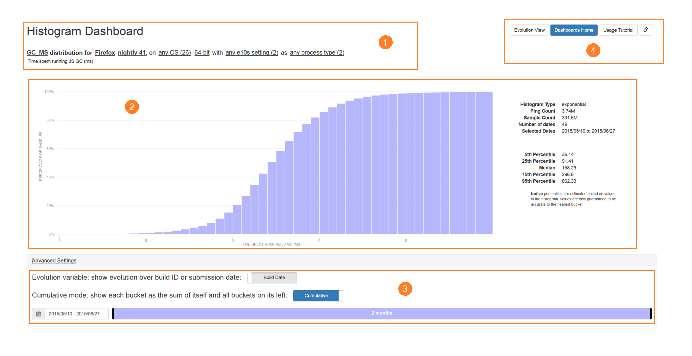
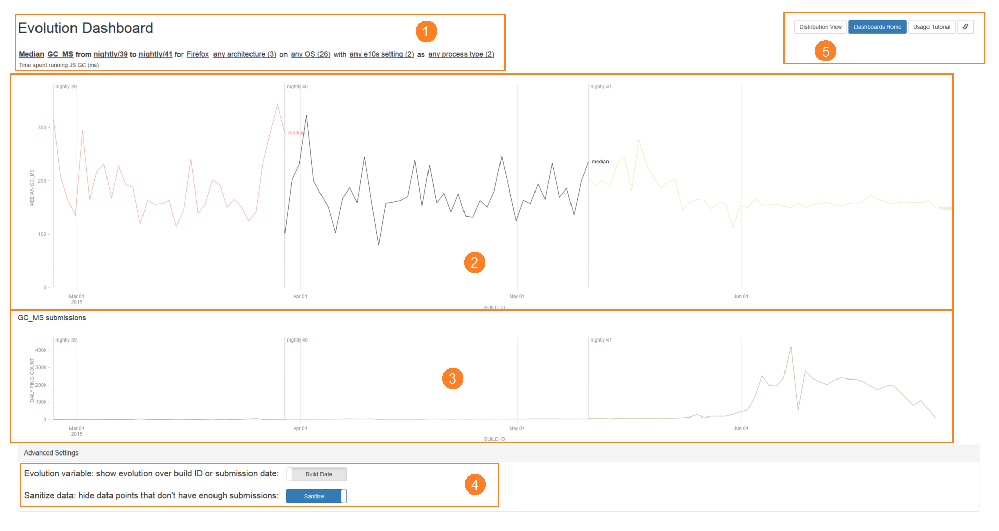

Telemetry Dashboard Documentation
Basic Concepts
- Histogram
- A type of chart usually used to represent the distribution of data. Typically seen as a column chart where the X axis is a series of buckets and the Y axis is the number of data points that fall into any given bucket.
- Evolution
- A collection of histograms, each associated with a date. An evolution represents the change in a distribution over time by mapping dates to histograms. If an evolution is over a set of dates (which is generally the build date/buildid or submission date), then it is a mapping from those dates to histograms. For example, an evolution over buildIDs maps dates to histograms submitted from builds made on that buildID's date.
- Kth Percentile
- A measurement value for which K percent of the data points are at or below this value.
- Aggregate
- A summarizing, single numerical value for a histogram, such as the mean or median. Histograms have one of each aggregate, while evolutions can have many - one for each histogram they contain.
- Measure/Metric
- A value that can be measured via Telemetry, such as the number of milliseconds used in each garbage collection cycle in Firefox (GC_MS). Since there are a lot of these values, we generally only want to see their aggregates, such as their average.
- Keyed Measure
- A type of measure that associates keys (strings) to sub-measures, such as addon exceptions associated with the number of times those exceptions are thrown (JS_TELEMETRY_ADDON_EXCEPTIONS). Each sub-measure has their own aggregates and histograms.
- Sample
- A single reading for a measure. Generally, we only care about the number of these that fall within a certain range, not the sample values themselves.
- Submission/Ping
- A single Telemetry entry from a user. One submission can contain any number of samples, for any number of measures. Note that due to e10s, users will submit pings from both main processes and child processes. Therefore, a single user session might have multiple pings.
- BuildID
- The date at which the Telemetry-enabled program that sent a given submission was built, represented as a timestamp of the form YYYYMMDDHHMMSS.
- Submission Date
- The date at which a given submission was sent. This is different from the BuildID - a build made on April 5, being used on May 15, submits with a buildID date of April 5, but submits with a submission date of May 15.
Histogram Dashboard
The histogram dashboard is designed for viewing distributions of measures.
Example use cases include:
- Checking aggregate values for a measure over an entire range of dates.
- Seeing how the distribution for a measure changes for different builds.
- Counting the number of submissions that have a certain range of measure values.
The dashboard has four sections:

-
The filters bar has multiple selectors that control which submissions to include in the histogram. In the screenshot above, the filters bar specifies that we want to see the distribution of:
- GC_MS (the time spent inside the GC, in milliseconds),
- for Firefox only (rather than other Telemetry-enabled applications),
- for nightly 41,
- built for 64-bit computers,
- running on any OS,
- with either e10s enabled or disabled,
- and if e10s is in fact enabled, then include submissions from either main or child processes.
-
The histogram view shows the distribution of the measure where submissions are filtered by the filter criteria, as well as summary statistics on the right. In the screenshot above, the view shows:
- GC_MS has a normal-like distribution, centered around 140-160ms - most users will spend around that much time in the Javascript GC.
- The percentile values, such as the median value being 158.29ms.
- The total amount of submissions and the number of samples in the time range.
-
The advanced settings control options that most users will not need to use, but might possibly be useful in some situations:
- The evolution variable toggle controls whether the date range (at the bottom of the advanced settings) is filtering the range of buildIDs, or submission dates. Basically, this controls whether we show the distribution for builds made in the date range, or builds that are submitting entries in the date range.
- The cumulative mode toggle controls whether we show sequential, disjoint buckets in the histogram, or have all buckets start from 0 - whether we add all the buckets on the left of each bucket to the bucket itself. When enabled, the histogram shows the cumulative distribution, which is useful for finding the number of samples that are above or below a certain value.
- The date range controls the dates for which we include submissions in the histogram. This consists of a date range picker and a draggable range bar. The date can be explicitly selected using the date range picker, or the endpoints of the rangebar, visible as vertical black bars, can be dragged to change the start or end dates. The bar itself can also be dragged to shift the range earlier or later.
-
On the top right, there is a navigation bar:
- The Evolution View button switches to the evolution dashboard, transferring all the filtering over where applicable. For example, if we are currently showing the distribution of GC_MS for Firefox 32-bit on Windows, then this link will take us to the evolution dashboard, showing the evolution of GC_MS for Firefox 32-bit on Windows.
- The link button on the right obtains a shortened URL for the page in its current state, filters and all. This is useful for sharing certain configurations without copying and pasting long, unwieldy URLs.
Evolution Dashboard
The evolution dashboard is designed for viewing the evolution of aggregate values for measures over time.
Example use cases include:
- Seeing how the average time taken for painting has changed over the last few nightly builds.
- Comparing aggregate values for different versions over time.
- Checking the number of Telemetry-enabled applications making submissions.
The dashboard has five sections:

-
The filters bar has multiple selectors that control which evolutions to show, and how submissions are filtered for use in evolutions. In the screenshot above, the filters bar specifies that we want to see:
- the median values of GC_MS (the time spent inside the GC, in milliseconds),
- for each version between nightly 39 to nightly 41 (inclusive),
- for Firefox only (rather than other Telemetry-enabled applications),
- built for any architecture,
- running on any OS,
- with either e10s enabled or disabled,
- and if e10s is in fact enabled, then include submissions from either main or child processes.
-
The evolution view shows the aggregate values of the selected evolutions over time. In the screenshot above, the view shows:
- The median GC_MS is generally between 100ms to 300ms for all versions.
- The median GC_MS variance is quite high until nightly 41, after which it stabilizes around 180ms.
- Nightly 39, 40, and 41 data start points, labelled by the gray vertical lines.
- Detailed information about specific dates (like numerical values) when hovering over any point on the graph.
-
The submissions view shows the number of Telemetry submissions made over time. In the screenshot above, we see that:
- There are very few submissions for each nightly build until around June, after which there is a large increase by several orders of magnitude.
- Detailed information is shown about specific dates (like numerical values) when hovering over any point on the graph. This is synchronized with the hover-information on the evolution view.
-
The advanced settings control options that most users will not need to use, but might possibly be useful in some situations:
- The evolution variable toggle controls whether evolutions are taken over buildID (build date) or by the date that the values were submitted (submission date). A build made on April 5, submitting a ping on May 15, will result in a submission with a build date of April 5 and a submission date of May 15. Evolution over buildIDs is usually preferred, since it tells us how a particular build is doing. However, viewing evolutions over submission dates is occasionally useful for other purposes.
- The sanitize data toggle controls whether we hide evolution points that don't have enough submissions. When disabled, all evolution points are shown, even those with very few submissions (which may result in unrepresentative data). When enabled, the points in the first percentile of submission counts, and those with a submission count of fewer than 100 are not shown.
-
On the top right, there is a navigation bar:
- The Distribution View button switches to the histogram dashboard, transferring all the filtering over where applicable. For example, if we are currently showing the evolution of GC_MS for Firefox 32-bit on Windows, then this link will take us to the histogram dashboard, showing the distribution of Firefox 32-bit on Windows.
- The link button on the right obtains a shortened URL for the page in its current state, filters and all. This is useful for sharing certain configurations without copying and pasting long, unwieldy URLs.